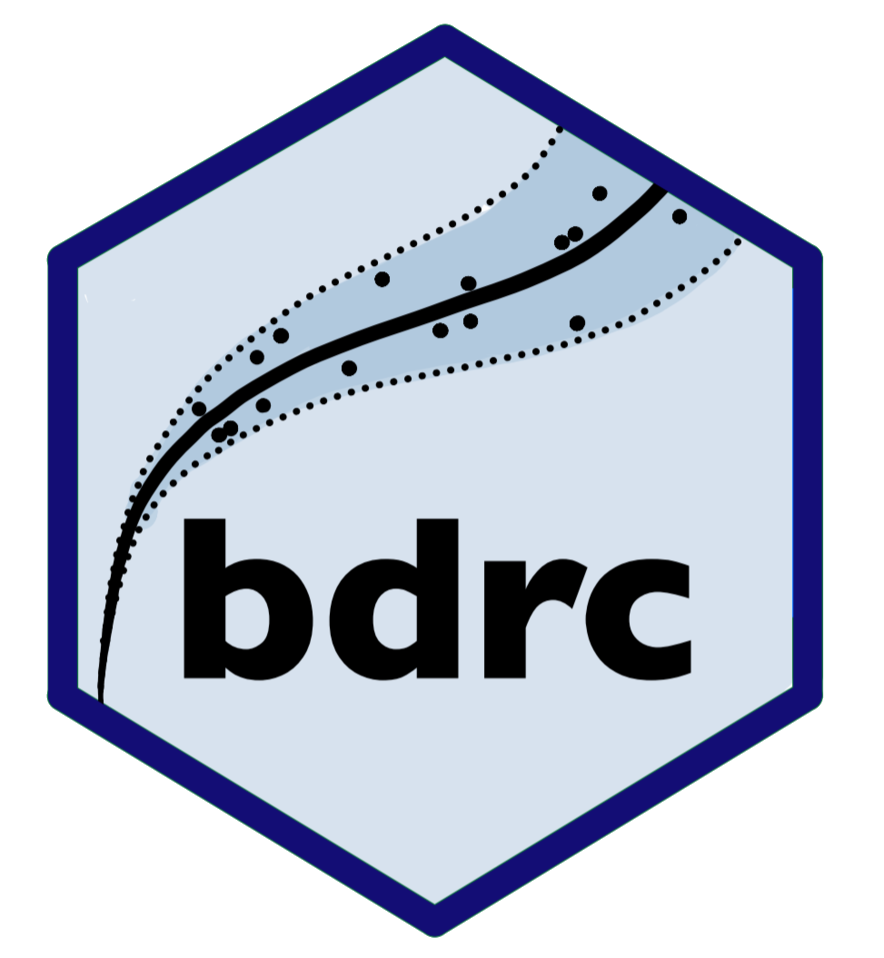

Changelog
Source:NEWS.md
bdrc 2.0.0
- Integrated C++ via Rcpp and RcppArmadillo packages for significant performance improvements.
- Multiple functions rewritten in C++ to speed up the MCMC sampling algorithm and various other tasks.
- The “Deviance” posterior output has been transformed and renamed “Posterior log-likelihood”. The Deviance was previously calculated as -2 times the Posterior log-likelihood.
- The plot(tournament_obj, type = “Deviance”) figure is now created by evaluating plot(tournament_obj, type = “boxplot”).
- The log-likelihood of the models is now computed with the log-transformed discharge observations (normally distributed), rather than with discharge on the real scale (log-normally distributed).
- Pointwise WAIC values (WAIC_i) stored to the model objects.
- Implemented standard error computations for WAIC and Delta_WAIC estimates.
- Applied log-sum-exp trick in WAIC and Bayes factor calculations for numerical stability.
- Added DOI links to references.
- Revised summary() output for tournament objects.
- Updated package vignettes to reflect recent changes and improvements.
bdrc 1.1.0
CRAN release: 2023-03-19
- The tournament function now supports information criteria (WAIC & DIC) as the model selection criteria, WAIC being the new default.
- Six new real-world datasets from Iceland and Sweden containing paired observations of stage and discharge have be included in the package.
- The package can now also be used in a user-friendly interactive rating curve builder Shiny application [https://bdrc.shinyapps.io/bdrc/].